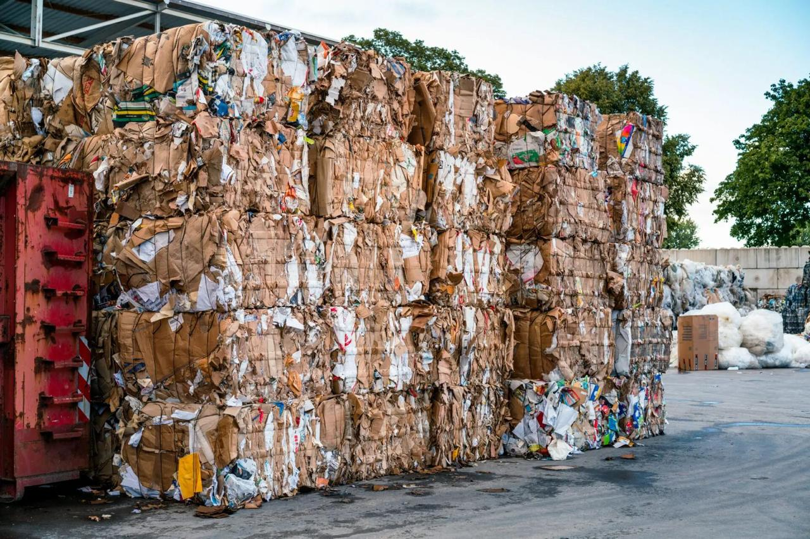
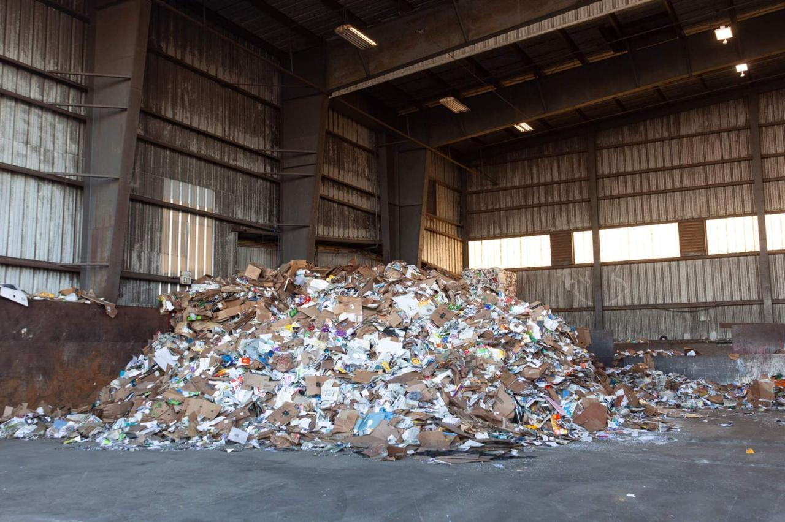
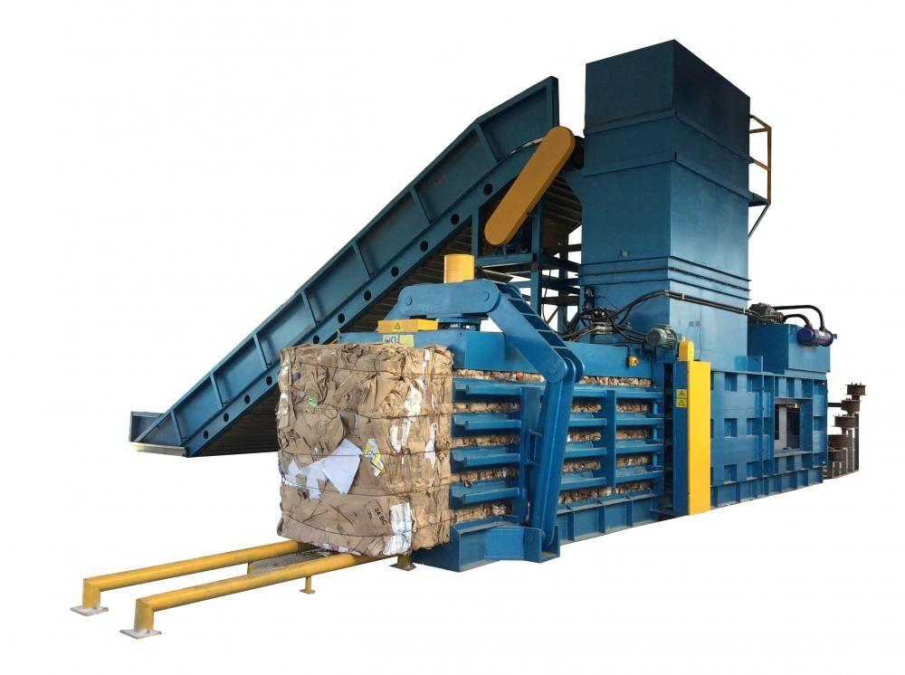
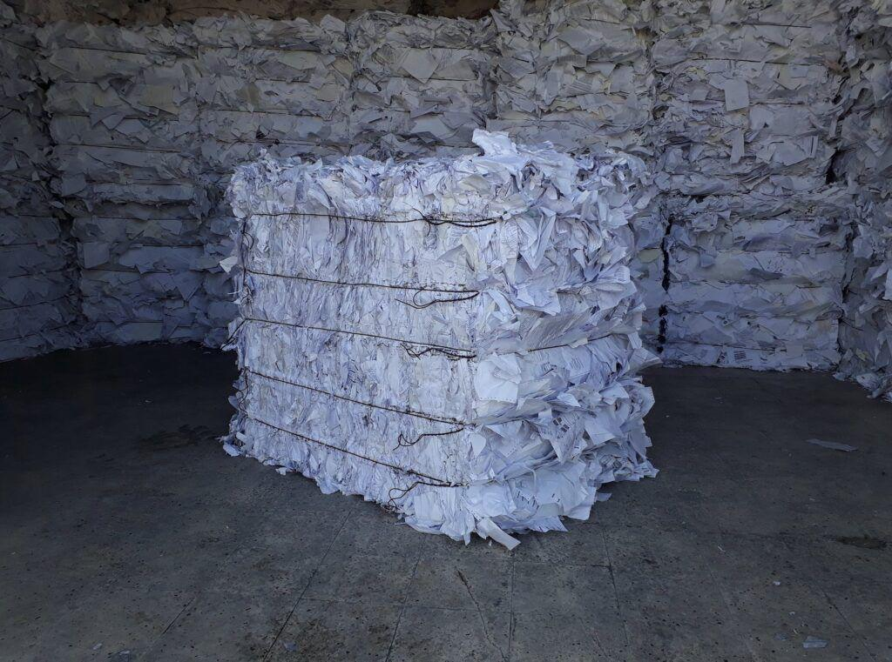

BNB ENTERPRISES
Loading...
Import and local sourcing of paper scrap — OCC, SOP, ONP, OMP, CBS, Kraft, and more — processed into quality bales for recycling units and paper mills.
BNB Enterprises is engaged in the import and processing of paper scrap for recycling. We import paper bales from international markets and also source paper scrap locally, supplying well-prepared, correctly graded bales to recycling units and paper mills. Our focus throughout every stage of the operation is on proper grading, consistent quality, and reliable bale preparation to meet the exacting requirements of the recycling industry and paper manufacturing sector.

We import and process a wide range of internationally recognized paper scrap grades, as well as locally sourced material — covering the full spectrum of grades required by recycling units and paper mills.

In addition to imports, we also source paper scrap locally and process it at our facility. The material is sorted, cleaned, and compressed into standard bales ranging from 1 ton to 1.75 tons, suitable for efficient handling, storage, and recycling. All material is checked, sorted, and handled carefully to ensure it meets recycling and mill specifications before dispatch.
Our bale preparation process focuses on proper segregation of paper grades, clean and compact baling, uniform bale weight across every batch, and easy handling for transport and recycling plants. Our paper bales are supplied directly to recycling units and paper mills as ready-to-process raw material for manufacturing new paper and packaging products.


Ans. BNB Enterprises handles a comprehensive range of paper scrap grades covering both imported and locally sourced material. Our imported grades include Kraft Paper Scrap, OCC (Old Corrugated Containers), White Record and White Ledger, SOP (Sorted Office Paper), ONP (Old Newspapers), OMP (Old Magazines), and CBS (Coated Book Stock). Locally sourced grades include Mixed Paper and Printed Book Scrap. All grades are processed, graded, and baled at our facility to meet recycling industry and mill specifications.
Ans. BNB Enterprises does both. We import paper scrap bales from international markets covering globally recognized grades such as OCC, SOP, ONP, OMP, CBS, Kraft, and White Ledger. We also source paper scrap locally — including Mixed Paper and Printed Book Scrap — and process it at our facility. Whether imported or locally sourced, all material goes through the same rigorous sorting, grading, cleaning, and baling process before being supplied to our customers.
Ans. Our paper bales are produced with standard bale weights ranging from 1.0 to 1.75 tons per bale, making them suitable for efficient handling, transport, warehousing, and direct input to recycling facilities and paper mills. The baling process focuses on proper grade segregation, clean and compact compression, and uniform bale weight within every batch for consistent, trouble-free operations at the receiving facility.
Ans. Our paper scrap bales are supplied primarily to recycling units and paper mills, where the material is used as raw input for manufacturing new paper and packaging products. Depending on the grade, our bales support the production of corrugated board and containerboard, newsprint and packaging material, high-quality white writing paper, coated paper and magazine paper, tissue paper, and recycled fiber board — supporting both cost-effective production and environmental sustainability goals.
Ans. Quality starts at the sourcing stage. All incoming material, whether imported or locally sourced, is inspected on receipt. Each grade is strictly segregated to avoid cross-contamination between paper types. Material is then sorted to remove contaminants, non-paper items, and off-grade content. Moisture content is monitored and kept within acceptable limits for each grade category. Finished bales are checked for weight uniformity and condition before dispatch to ensure they are mill-ready and meet buyer specifications.
Ans. Each grade serves a different manufacturing end-use. OCC (Old Corrugated Containers) is used for corrugated board and containerboard production. SOP (Sorted Office Paper) is used for high-quality white paper manufacturing. ONP (Old Newspapers) goes into newsprint and packaging. OMP (Old Magazines) and CBS (Coated Book Stock) are used for coated paper production. Kraft scrap goes into packaging board and kraft paper. White Ledger and White Record are used for premium white paper and tissue. Mixed Paper and Printed Book Scrap support general recycled fiber and board production.
Ans. Paper scrap recycling is a vital part of the circular economy. By collecting, processing, and supplying waste paper back to mills as raw material, we reduce the demand for virgin wood pulp, lower energy consumption in paper manufacturing, and divert significant volumes of paper waste from landfills. BNB Enterprises is proud to be part of this sustainability chain, supplying quality paper scrap that supports both the environmental goals and production cost targets of paper mills and recycling units.
Ans. Contact BNB Enterprises at +91 9940191813 or email admin@bnbentglobal.com. Our office is at #75 Abdul Kalam Road, Nagalkeni, Chromepet, Chennai, Tamil Nadu 600075, India. Our team will discuss your grade requirements, volume needs, bale specifications, pricing, and supply schedules.
For inquiries about our paper scrap grades, bale supply, or recycling partnerships, contact us today: